Dr. Rakesh Bhaskaran Nair
“Engineering durable surfaces and catching degradation as it happens.”
Core Focus: Thermal & Cold Spray deposition · Materials Degradation (Erosion-Corrosion & High-Temp) · Real-Time AM Diagnostics
Now Lead Guest Editor · npj Materials Degradation (Nature Portfolio) & Discover Surfaces (Springer Nature)
View Publications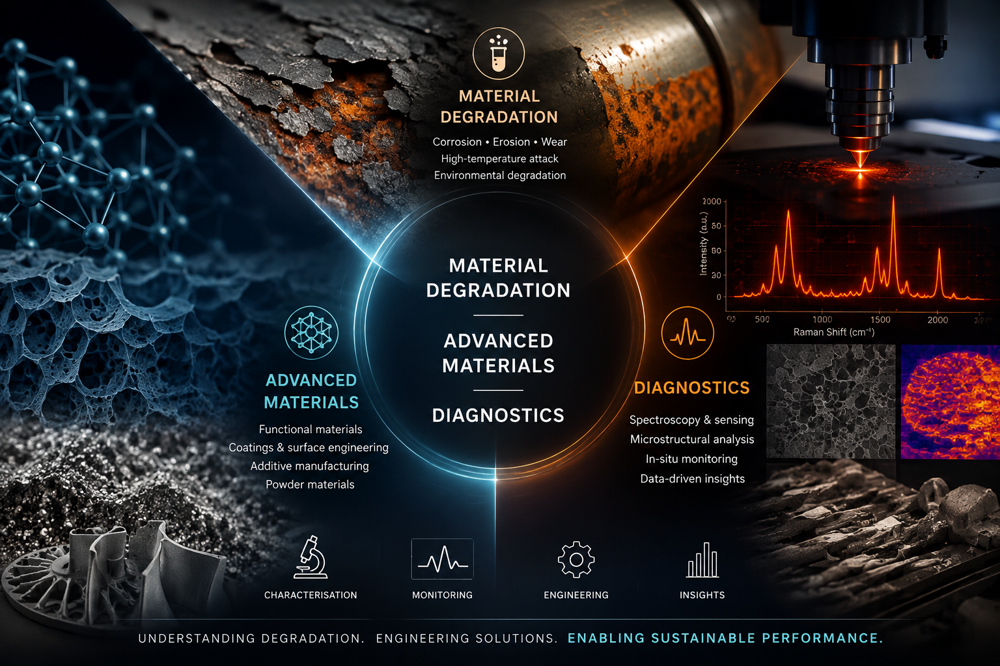
Biography
Dr. Rakesh Bhaskaran Nair is a Principal Investigator and Early Career Research Leader in the School of Mechanical and Manufacturing Engineering at Dublin City University, Ireland. His research integrates the design and deposition of protective coatings with real-time materials diagnostics, directly addressing component degradation in extreme operational environments. He leads a Research Ireland ARC Hub project focused on developing a metal powder quality intelligence platform for advanced manufacturing, an initiative built upon more than six years of post PhD research across Canada and Ireland.
A primary focus of his research is the design and processing of thermal spray and cold spray depositions, including high entropy alloy systems. These engineered surfaces target resistance against erosion, erosion corrosion, wear, and high temperature oxidation in aerospace, wind energy, and marine tribo systems. His technological contributions include a bespoke abradable test rig co developed with Pratt and Whitney Canada through the CRIAQ consortium, alongside an alloy by design framework linking coating chemistry and process control to long term degradation resistance.
In parallel, Dr. Nair advances physics informed thermal and optical diagnostics to detect defects during laser powder bed fusion as they occur. This real time process monitoring supports powder circularity, material sustainability, and process repeatability in additive manufacturing. He serves as Lead Guest Editor for npj Materials Degradation (Nature Portfolio) and Discover Surfaces (Springer Nature). He earned his Ph.D. from Shiv Nadar University, India (2020), followed by postdoctoral research appointments at the University of Alberta and Concordia University, Canada.
Four Connected Research Pillars
Coatings, diagnostics and sustainable powder qualification for extreme environments.
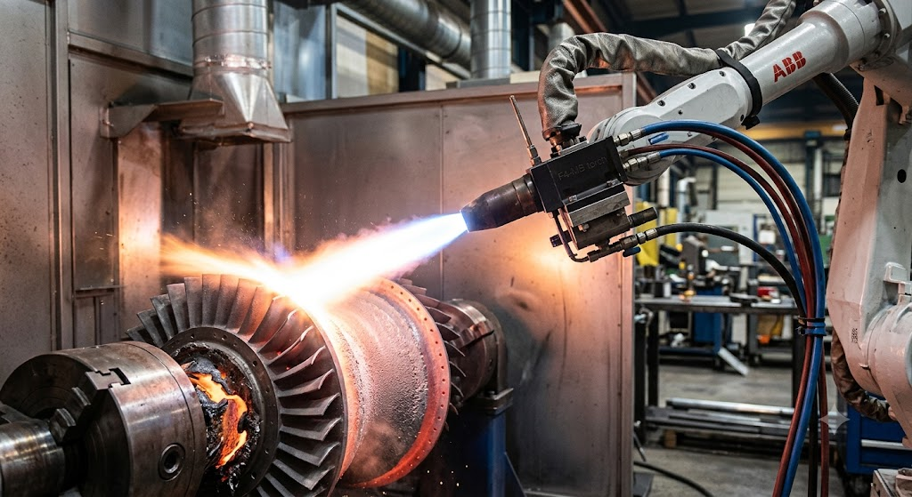
Thermal Spray Coatings
HEA and thermal barrier coatings by flame, HVOF and plasma spray, built to resist wear, erosion and high-temperature corrosion.
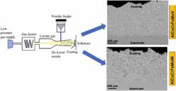
Cold Spray Deposition
Solid-state deposition of advanced and high-entropy alloy powders for erosion-, corrosion- and wear-resistant surfaces and repair.
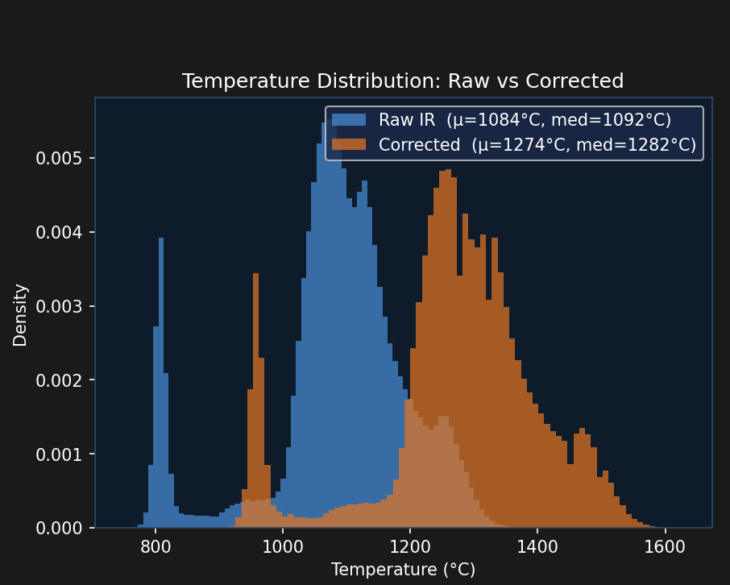
Thermal Diagnostics & Sensors
Emissivity correction, infrared pyrometry and sensors that monitor melt-pool behaviour in L-PBF in real time.
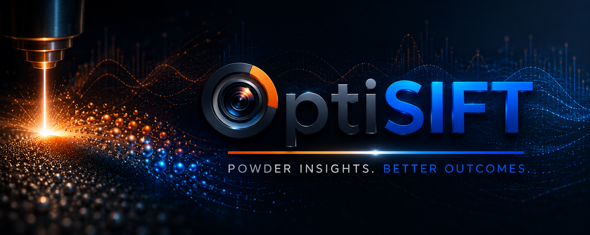
Powder Sustainability & Digital Infrastructure
Reflectance-spectroscopy that quantifies powder oxidation and reuse, powering platforms for powder qualification and circularity.
Publications & Projects
29 peer-reviewed articles, 1,240+ citations, h-index 18, with 18 as first or corresponding author. Grouped below by theme, each linked to its DOI.
Further peer-reviewed articles, conference papers, and poster presentations are available on Google Scholar.
Funding
Over €220,000 secured as Principal or Co-Investigator across Ireland, Canada and Japan.
OptiSift — ARC Hub for ICT
My Research Ireland ARC Hub project: a metal powder quality intelligence platform bringing spectral imaging and diagnostics to powder qualification for advanced manufacturing.
- Metal powder quality intelligence platform
- Spectral imaging and process diagnostics
- Powder qualification for additive manufacturing
- Research Ireland ARC Hub · 2026 to 2027
Design & Execution
Test rigs and diagnostic systems I designed and commissioned from first principles.
Spectral Imaging Platform
Spectral imaging system for the metal powder qualification platform.
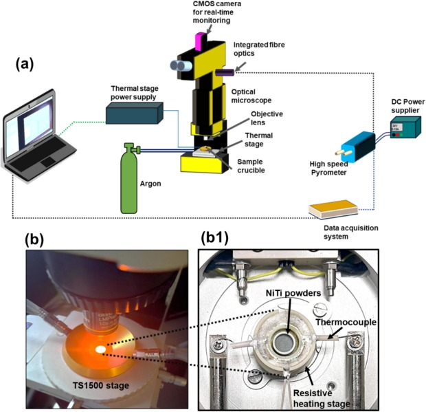
Thermal Measuring System
Customised thermal measuring system for emissivity estimation in the L-PBF framework.
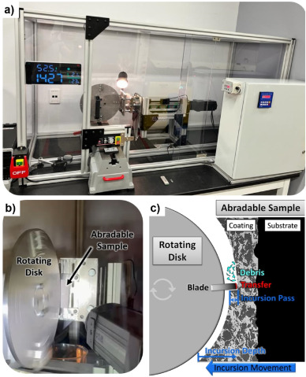
Abradable Test Rig
Sub-scale abradable test rig for aerospace static seals, led with Kaue Bertuol.
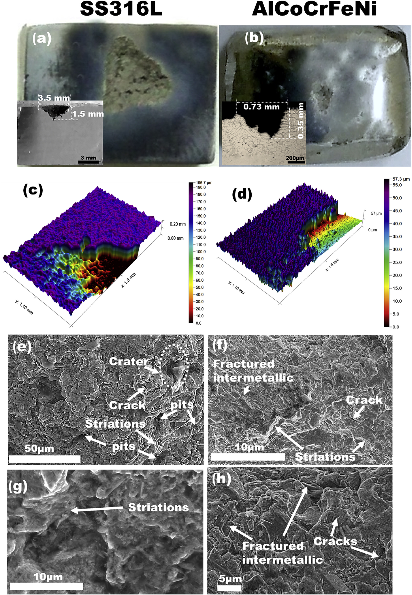
Liquid Impingement Erosion Rig
High-speed liquid impingement erosion rig (up to 150 m/s) for extreme-environment simulation.
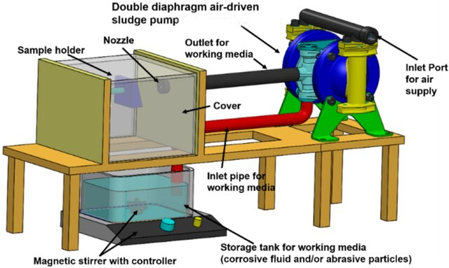
Slurry Erosion-Corrosion Rig
Slurry-based erosion-corrosion test rig simulating offshore and energy environments.
Featured Videos
Coatings, powder degradation and real-time diagnostics, in motion.
Real-Time Metal Powder Oxidation in the Powder Bed
Live visualisation of metal powder oxidising under thermal exposure inside the powder bed, capturing degradation as it happens during laser powder bed fusion.
- Real-time imaging of powder oxidation
- Thermal-powder interaction in the bed
- Direct insight for powder reuse and qualification
- Supports sustainable additive manufacturing
Next-Generation High-Entropy Alloys via Semi-Autonomous Deposition
Depositing next-generation high-entropy alloy coatings through a semi-autonomous process, engineering durable and sustainable surfaces for industry.
- Semi-autonomous coating deposition
- High-entropy alloy systems
- Erosion, corrosion and wear resistance
- Toward sustainable industrial futures
Research Partnerships & Collaboration
I welcome opportunities to develop interdisciplinary research collaborations across academia, industry, and research organisations.
Research Partnerships & Funding
I am interested in co-developing collaborative research proposals and competitive funding applications in areas including:
- Advanced and additive manufacturing
- Metal powders and powder-based processing
- Materials characterisation and spectroscopy
- Process monitoring, sensing and diagnostics
- Manufacturing quality and reliability
- Surface engineering, coatings and degradation
- Translational and industry-led manufacturing research
I am particularly interested in developing collaborative projects that connect fundamental research with industrial applications and technology translation.
Academic Collaboration & Research Hosting
I welcome opportunities for:
- Collaborative research projects and joint publications
- Co-supervision of PhD and MSc research
- Interdisciplinary research proposals
- Research fellowship and academic hosting opportunities
- Development of industry-academic research programmes
Industry R&D & Technology Translation
I work with industry and technology partners on applied research challenges involving advanced manufacturing, materials, process diagnostics and experimental characterisation. Potential areas of collaboration include:
- Development of experimental test rigs and diagnostic systems
- Spectroscopy and optical/process monitoring
- Powder characterisation and process optimisation
- Additive manufacturing quality and process control
- Materials and coating performance
- Failure analysis and technology development
I am particularly interested in collaborations where research can progress from laboratory-scale investigation toward practical industrial implementation.
Teaching & Supervision
Case-led, hands-on teaching that builds diagnostic reasoning before theory.
From material to function
Materials and manufacturing taught as the real constraints of engineering design.
Case-led learning
Open with a real process failure and have students diagnose it before theory.
Holistic mentorship
A flat hierarchy where students take risks and grow into independent researchers.
Current Teaching
- 2025MEC1069 (MSc): IR Sensors & Thermal Diagnostics for Additive Manufacturing.
- 2026MEC1069 (MSc): Thermal Spray Manufacturing Technologies for a Sustainable Future.
- 2014-15Module Lead: Strength of Materials, Materials Science & Metallurgy, Thermal Engineering (BSc).
Supervision & Mentoring
- Day-to-day mentor to 9+ postgraduate researchers (3+ PhD, 6+ MSc).
- Two co-supervised MSc researchers reached co-authorship on 3+ Q1 publications.
- Trained 10+ HQPs on high-temperature tribometer safety and SOP adherence.
Credentials & Recognition
- 2026Fellowship of Advance HE (FHEA), UK — submitted.
- 2026Erasmus+ Staff Mobility Grant (teaching exchange).
- Lab2Market entrepreneurship & commercialisation training (Canada).
- DCU Academic Integrity & Teaching Enhancement training.
- School outreach on 3D printing & design (Tinkercad).
Hands-On Technical Training
- Laser Powder Bed Fusion — Aconity3D, Germany & Autodesk Netfabb.
- Cold Spray Deposition — University of Alberta.
- Thermal & Flame Spray — University of Alberta & Concordia University.
Diagnostic reasoning matters more than recall. I want students to diagnose the fault before I introduce the theory.
Teaching philosophyService, Achievements & News
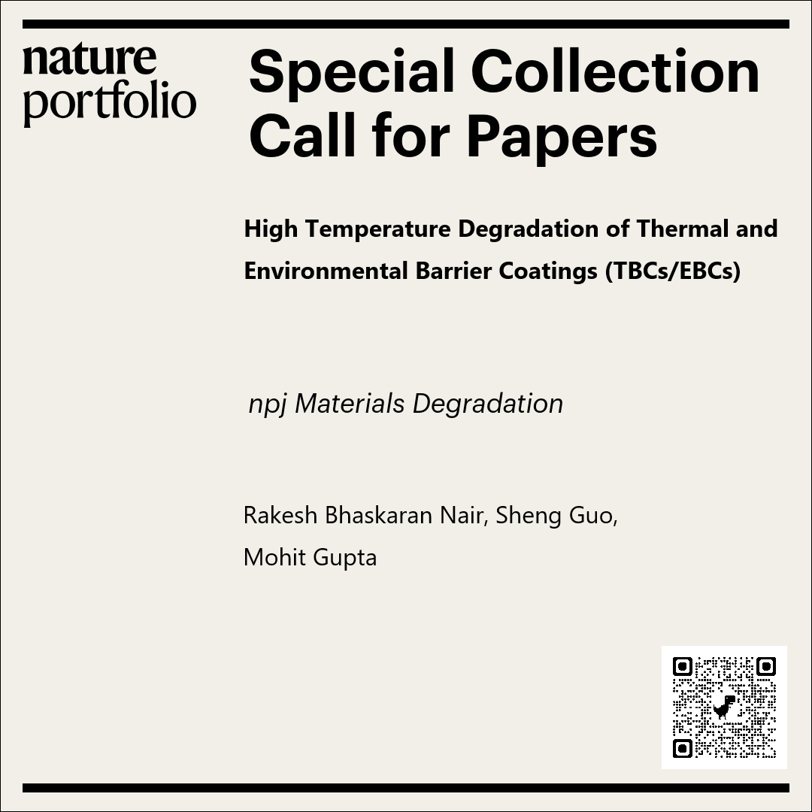
npj Materials Degradation
Special Collection: High-Temperature Degradation of Thermal & Environmental Barrier Coatings, guest-edited with Sheng Guo and Mohit Gupta. Open for submissions on TBC/EBC degradation, CMAS attack and high-temperature corrosion.
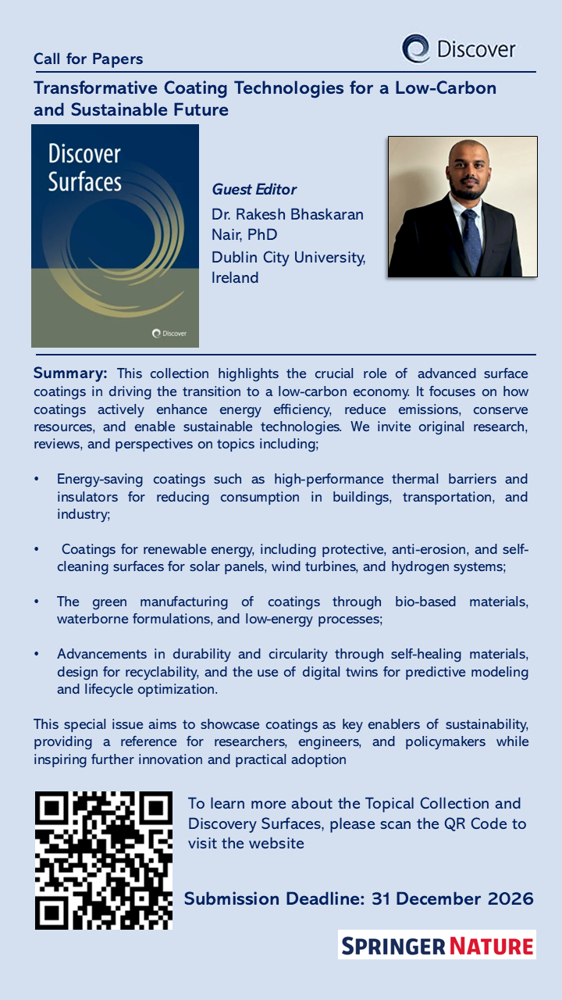
Discover Surfaces
Guest-edited collection in Discover Surfaces (Springer Nature), welcoming work on surface engineering, coatings, and materials degradation.
Editorial & Service
- 2026Lead Guest Editor, npj Materials Degradation (Nature Portfolio).
- 2026Lead Guest Editor, Discover Surfaces (Springer Nature).
- 2026Working Group Member, EU COST Actions CA23155 & CA22143.
- 2025Proposal Reviewer, National Science Centre (NCN), Poland.
- 2023Guest Editor, Coatings (MDPI).
- 2019Peer reviewer for 15+ international journals.
Awards & Honours
- 2026Erasmus+ Staff Mobility Grant.
- 2025Communication Leadership Award, I-Form Research Ireland Manufacturing Centre.
- 2023Best Poster Award (First Prize), International Thermal Spray Conference, Quebec City.
- 2021Mitacs Accelerate Award (competitive), Canada.
- 2020Competitive Postdoctoral Fellowship, University of Alberta.
Recent News
- 2026Designed and delivered a new MSc lecture on Thermal Spray Manufacturing Technologies for a Sustainable Future at Dublin City University.
- 2026Appointed Lead Guest Editor for npj Materials Degradation and Discover Surfaces.
- 2026Joined the Working Groups of EU COST Actions CA23155 and CA22143.
- 2025Received the Communication Leadership Award, I-Form Research Ireland Manufacturing Centre.
Selected Invited Talks
- 2026Effective Emissivity Hysteresis of NiTi and SS316L Feedstocks: A Calibration and Accuracy Pyrometry Study. 4DMA International Conference, Dublin.
- 2025Spectral Emissivity-Informed Calibration Maps and Real-Time Microstructural Monitoring of NiTi Powders. Invited presentation, I-Form Sustainability Committee.
- 2025Spectral Emissivity Calibration Maps for NiTi Powders. Invited technical webinar, I-Form Research Ireland Centre for Advanced Manufacturing.
Certificates & Recognition
Selected certificates and professional recognition. Click any to view the full document.


Let's Collaborate
If you are interested in developing a research project, funding proposal, industry collaboration, or student research opportunity, I would be pleased to discuss potential areas of collaboration.
Email: rakesh.nair@dcu.ie
Institution: School of Mechanical & Manufacturing Engineering, Dublin City University, Glasnevin, Dublin 9, Ireland